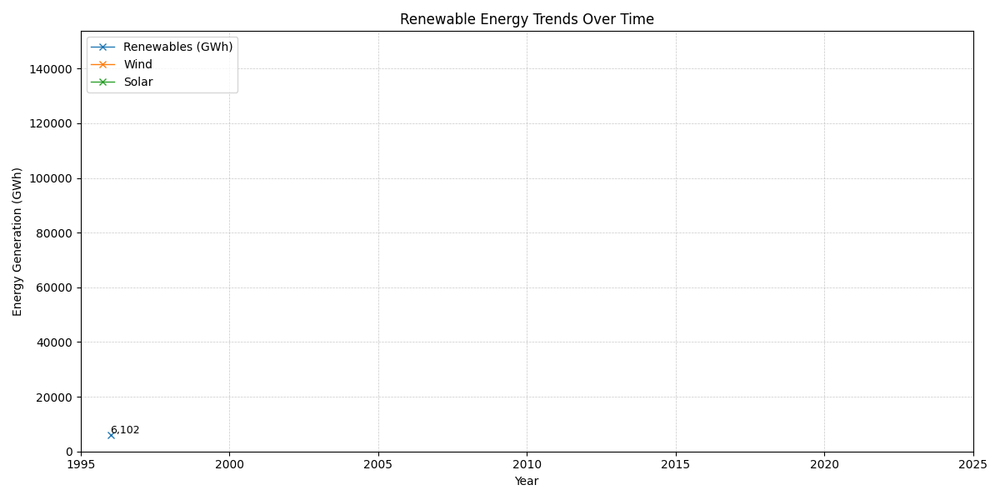
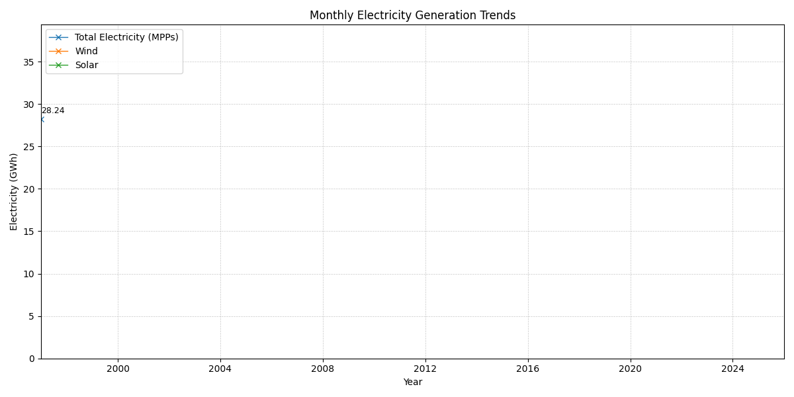
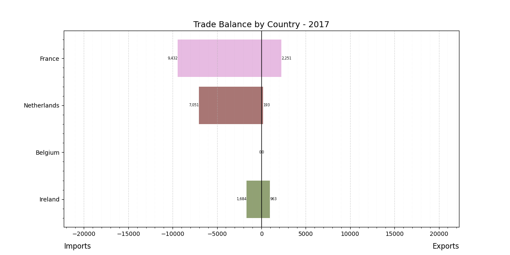

Introduction
Recently, due to rapidly accelerating global affairs, increasing climate pressures, and perhaps simply reaching adulthood, I have become more aware of energy use in everyday life. Whether filling up my car at a petrol station or plugging in an electric vehicle to charge, questions arise: will energy always be available for transport? Could supply disruptions affect daily life? What happens if demand outpaces supply?
I, like many others, have grown up in a world where leaving lights on, charging devices overnight, or turning up the heating comes without much thought. However, I have come to realise that this level of energy security is a privilege. These concerns motivated this project: to better understand how the UK produces energy and the extent to which it relies on overseas provision—something I had not previously considered in depth.
One inspiration behind this project was Kate Morley, whose website I later reference in relation to my web scraping work. I was also encouraged by my father, who has a strong interest in energy systems and first introduced me to this topic.
After exploring annual, monthly, and daily datasets, my findings suggest that the UK is moving away from coal as a source of energy provision and transitioning towards renewables—particularly wind generation.
Past Few Decades of Electricity Generation

The graph above illustrates the growth of renewable energy generation in the UK since 1996. Wind energy (both offshore and onshore) begins to increase significantly in the early 2000s, while solar energy contributes a much smaller share, only rising noticeably over the past 15 years.
This raises several key questions:
- Why is wind growing faster than solar?
- Are there observable monthly trends?
- How fast is wind generation increasing?
- What about non-renewable energy generation?
- What does the current energy mix look like?
These questions are explored below.
Why is wind growing faster than solar?
In the graph below, monthly renewable energy generation for Major Power Producers (MPPs) is shown:

Clear seasonal trends can be observed in solar generation, with a smooth oscillating pattern—higher production in summer months and lower in winter—becoming visible from around 2014. Despite this, solar output remains significantly lower than wind.
One explanation is efficiency and consistency. According to Compare Your Footprint, a wind turbine can produce substantially more energy per unit than a solar panel. Additionally, solar panels are limited to daylight hours, whereas wind—particularly offshore—can generate electricity more consistently.
These factors help explain the faster growth of wind energy, although solar remains an attractive option for domestic energy generation.
How fast is wind generation increasing?
Between January 2007 and January 2026, wind generation increased by approximately 9.25 terawatt hours (TWh) on a monthly basis, as shown below.
Recent data also highlights rapid short-term growth. According to Reuters, wind output surged by 33% between January and March 2026 compared to the same period in 2025.
Large offshore wind projects have contributed significantly to this growth. For example, the Hornsea wind farm became the largest offshore wind farm in the world in 2022, with 339 turbines (source).
New generation records continue to be set. On 25 March 2026, the UK generated 23,880 MW of wind power within a half-hour period (Renewables Now).
This sustained growth highlights the UK’s increasing reliance on wind as a core component of energy provision.
What about non-renewable energy generation in the UK?
The pie charts below show the average fuel mix used in UK electricity generation across different time periods.
Over the past two decades, there has been a clear shift away from coal. Between 2000–2005, coal accounted for 33.36% of energy generation. By 2020–2024, this had fallen to just 1.59%.
Meanwhile, renewable sources—particularly wind, solar, and biomass—have expanded significantly. Biomass generation has also reached record levels in recent years (Reuters).
Gas, however, remains a major component of energy production. As a non-renewable fuel, this reliance exposes the UK to geopolitical risks and price volatility. In contrast, oil contributes only a small share to electricity generation (around 0.66% between 2020–2024), though it remains critical for transport.
Trade
Are we becoming less reliant on overseas energy provision over time?
Before this project, I had not considered what happens when the UK produces too much or too little energy. In reality, international energy transfers play a crucial role.
Trade animation

The animation above shows electricity imports and exports between the UK and neighbouring countries since 2017. While the UK imports fuels such as LNG and oil globally, electricity trade is largely limited to nearby countries via interconnectors.
The UK has consistently imported electricity from France, partly because France generates around 70% of its electricity from nuclear power (source), providing a stable and reliable supply.
Looking ahead, the planned Sizewell C nuclear power station is expected to generate 3.2 GW (around 7% of UK demand) by the mid-2030s (National Audit Office). This could reduce reliance on imports.
In 2022, the UK briefly became a net exporter of electricity for the first time in decades. This was largely due to nuclear outages in France and increased gas exports following the European energy crisis triggered by the war in Ukraine.
Although recent trends suggest declining imports, this does not account for oil used in transport, which remains heavily import-dependent.
Energy Used in Transport
The graph above shows that, aside from the drop in 2020 due to COVID-19, transport fuel consumption has generally increased since 1970.
According to the UK National Travel Survey (2024), around 59% of households own petrol cars and 30% own diesel vehicles. This highlights the UK’s continued reliance on oil.
This dependence exposes the UK to global price shocks. For example, recent geopolitical tensions have led to fuel price increases, with petrol rising by 25p per litre and diesel by 48p (BBC News).
However, there are signs of change. UK transport fuel consumption appears to have peaked around 2007 and has since declined. The growth of electric vehicles, combined with cleaner electricity generation, offers a pathway towards reduced dependence on imported oil.
Today’s Energy Provision (UK)
What does our energy generation mix look like today?
After analysing long-term trends, it is useful to examine energy provision on a daily basis.
The image below shows today’s energy generation mix, total demand, and net imports/exports. This data is scraped from grid.iamkate.com.
div style="margin-top:20px;">